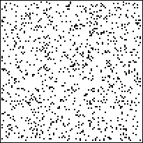
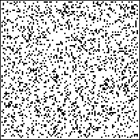
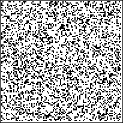
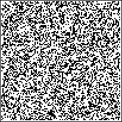
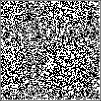
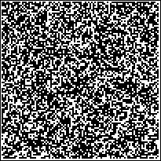
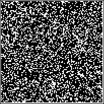
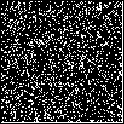
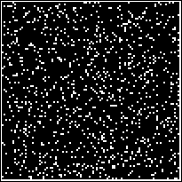

| To produce an example of such a percolation, start with a square
lattice of side length L and some number p, 0 ≤ p ≤ 1. |
| Generate a random number in [0,1] for each cell of the lattice, and say a cell is empty
if the random number is less than p. |
| Here we see patterns generated in this way for
p = 0.1, p = 0.2, ..., p = 0.9. |
| The empty cells are black, the filled cells white. |
|  |
 |
 |
|  |
 |
 |
|  |
 |
 |
|
| Imagining the dark cells are empty and
the light are filled with a solid, it is easy to see that a fluid injected anywhere along
the left side of p = 0.4 cannot flow to the right side. |
| For p = 0.7 there are channels through
which fluid can flow from left to right. |